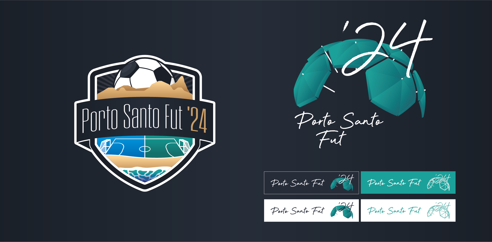
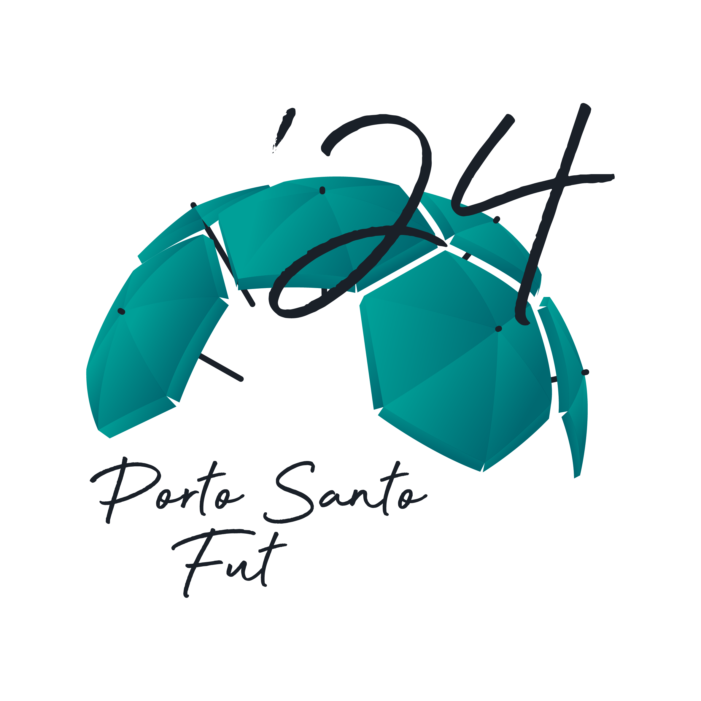

Porto Santo Fut '24

- Category: Graphic Design
- Company: OneSeven
- Year: 2024 - 2025
This project aimed to create a brand for a football tournament that would happen in the following year, from the logo to all of the assets and promotional material that would be used in said event.
Logo
The client didn't give much direction when it came to the logo, they just wanted something that could be identifiable as football and island where the tournament would be hosted, Porto Santo.
I started by making a team logo like the ones you see on e-sports football teams, but it didn't hit the mark. For the second option, I looked at the island and what it is known for: the beaches. So I went with a dome of umbrellas that also worked as the hexagons in the football pattern, a concept the client was on board with right away. The idea was also to have it be simple enough that it could easily be used for the following years, by changing the number and color.
I, then, tried to explore some extra elements in the chosen logo to make it scream "Porto Santo" a little bit more, but we ended up sticking with the original with just the umbrellas.

The first two logo options and tests of extra elemements in logo B.
We settled for the following logo options:

Promotional material
As far as promotion of the event went, I started by making and managing social media accounts on instagram and facebook. You can check the instagram timeline on https://www.instagram.com/portosantofut/

A screenshot of the event's instagram page.
The promotional material included the following items, which you can see pictured below:
- - Flyers
- - Standing prisms on each tournament designed meeting point
- - Wristbands
- - Flags
- - Decoration and identification of the main meeting point


Pictures of the promotional material
Trophies
For the trophies, they were made in 2 parts. We started by partnering with a company abroad to have the 3D engraving done on glass prisms, and then made the trophy around it, as you can see in the pictures below.


The tournament trophies.